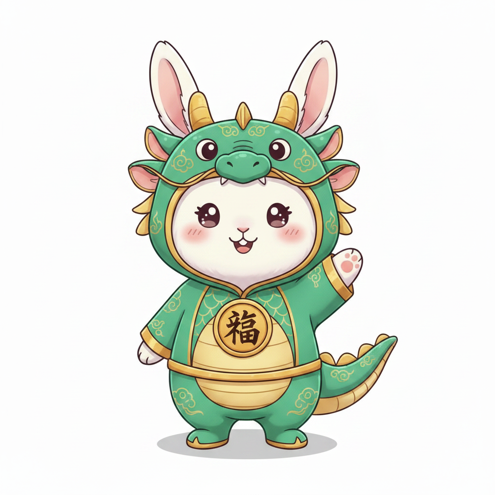

CHINESE ZODIAC
เจาะลึกความลึกลับของพลังงานปีเกิด
อ่านตัวตน เผยดวงชะตาสไตล์โหราศาสตร์ตะวันออก
อ่านตัวตน เผยดวงชะตาสไตล์โหราศาสตร์ตะวันออก
ปีนักษัตรของคุณ: ปี...
👤 บุคลิกและนิสัยใจคอ
❤️ เรื่องความรักความสัมพันธ์
✨ ทริคเสริมดวงชะตา
🔮 อยากรู้ชะตาชีวิตแบบเจาะลึก 100% ไหมคะ?
พลังจากปีเกิดเป็นเพียง 25% เท่านั้นค่ะ มาร่วมเจาะลึกวันและเวลาเกิดผ่านศาสตร์ "ปาจื้อ สี่เสาแห่งชะตา" เพื่อค้นหาธาตุเจ้าเรือนที่แท้จริงของคุณกันเถอะค่ะ!
🪙 ดูดวงปาจื้อ (20 เหรียญ)